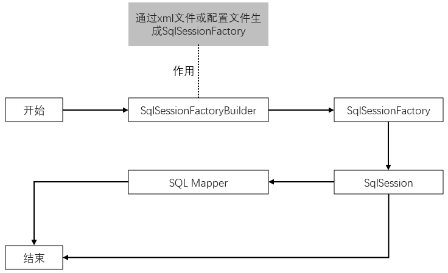
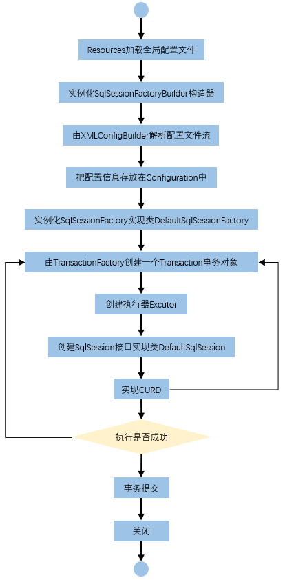
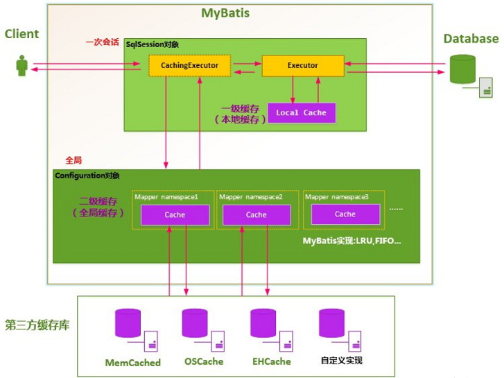

概述 Mybatis是 持久层框架、也是 半自动化的ORM框架（对象关系映射）。
持久化：将程序数据在持久状态和瞬时状态间转换的机制，即数据存入硬盘或从硬盘取出。JDBC就是一种持久化机制，文件IO也是一种持久化机制。
持久层：相当于专注于数据持久化逻辑的实现。
优势：MyBatis 避免了繁琐的 JDBC 代码和手动设置参数以及获取结果集的过程。通过使用简单的 XML 或注解来配置和映射原生信息，将接口和 Java 的实体类映射成数据库中的记录。
官方文档：https://mybatis.net.cn/
Maven 静态资源过滤 问题：在src或其子文件夹下写了配置文件却无法被导出到target，导致程序发生错误无法执行。
<build > <resources > <resource > <directory > src/main/java</directory > <includes > <include > **/*.properties</include > <include > **/*.xml</include > </includes > <filtering > false</filtering > </resource > <resource > <directory > src/main/resources</directory > <includes > <include > **/*.properties</include > <include > **/*.xml</include > </includes > <filtering > false</filtering > </resource > </resources > </build >
使用步骤 导入依赖
<dependencies > <dependency > <groupId > org.mybatis</groupId > <artifactId > mybatis</artifactId > <version > 3.5.6</version > </dependency > <dependency > <groupId > mysql</groupId > <artifactId > mysql-connector-java</artifactId > <version > 8.0.24</version > </dependency > <dependency > <groupId > org.projectlombok</groupId > <artifactId > lombok</artifactId > <version > 1.18.12</version > </dependency > </dependencies >
配置文件mybatis-config.xml
<?xml version="1.0" encoding="UTF-8" ?> <!DOCTYPE configuration PUBLIC "-//mybatis.org//DTD Config 3.0//EN" "http://mybatis.org/dtd/mybatis-3-config.dtd" > <configuration > <environments default ="development" > <environment id ="development" > <transactionManager type ="JDBC" /> <dataSource type ="POOLED" > <property name ="driver" value ="com.mysql.cj.jdbc.Driver" /> <property name ="url" value ="jdbc:mysql://localhost:3306/dbName?useSSL=true& useUnicode=true& characterEncoding=utf8" /> <property name ="username" value ="root" /> <property name ="password" value ="123456" /> </dataSource > </environment > </environments > <mappers > <mapper resource ="com/dao/xxx.xml" /> </mappers > </configuration >
工具类
public class MybatisUtils { private static SqlSessionFactory sqlSessionFactory; static { try { String resource = "mybatis-config.xml" ; InputStream inputStream = Resources.getResourceAsStream(resource); sqlSessionFactory = new SqlSessionFactoryBuilder ().build(inputStream); } catch (IOException e) { e.printStackTrace(); } } public static SqlSession getSession () { return sqlSessionFactory.openSession(); } }
编写实体类：编写过程中可以使用 lombok 进行注解开发，其中 @Data 提供get、set、toString方法；@AllArgsConstructor 提供有参构造、@NoArgsConstructor 提供无参构造。
编写接口及对应的mapper.xml
<?xml version="1.0" encoding="UTF-8" ?> <!DOCTYPE mapper PUBLIC "-//mybatis.org//DTD Mapper 3.0//EN" "http://mybatis.org/dtd/mybatis-3-mapper.dtd" > <mapper namespace ="" > ... </mapper >
参数传递 传递参数的两种方式 使用 @Param，例如：@Param("pwd") String Password
使用 Map：在接口方法中，参数直接传递Map，而sql语句正常使用参数。在使用方法时，Map的key为sql中取的值即可，没有顺序要求。
返回值 方法名(Map<String,Object> map); <select id="" resultType="" > select * from user where name = #{username} and pwd = #{pwd} </select> Map<String, Object> map = new HashMap <String, Object>(); map.put("username" ,"小明" ); map.put("pwd" ,"123456" ); User user = mapper.selectUserByNP2(map);
如果参数过多，可以直接使用Map实现；如果参数比较少，直接传递参数即可。
#与$的区别 #{} 的作用主要是替换预编译语句中的占位符? 【推荐使用】
INSERT INTO user (name) VALUES (#{name}); INSERT INTO user (name) VALUES (?);
${} 的作用是直接进行字符串替换
INSERT INTO user (name) VALUES ('${name}' );INSERT INTO user (name) VALUES ('kuangshen' );
提交事务的方式 增删改查需要 提交事务，即：session.commit()。 也可设置自动提交，改造MybatisUtils工具类的getSession( ) 方法，重载实现。
public static SqlSession getSession () { return getSession(true ); } public static SqlSession getSession (boolean flag) { return sqlSessionFactory.openSession(flag); }
结果集映射 <resultMap id ="UserMap" type ="User" > <id column ="id" property ="id" /> <result column ="name" property ="name" /> </resultMap > <select id ="" resultMap ="UserMap" > ... </select >
多对一、一对多 多对一 按结果嵌套处理：直接查询出结果，进行结果集的映射，相当于联表查询。
实例：多个学生对应一个老师
private Teacher teacher; <resultMap id ="StudentTeacher2" type ="Student" > <id property ="id" column ="sid" /> <result property ="name" column ="sname" /> <association property ="teacher" javaType ="Teacher" > <result property ="name" column ="tname" /> </association > </resultMap > <select id ="getStudents2" resultMap ="StudentTeacher2" > select s.id sid, s.name sname, t.name tname from student s, teacher t where s.tid = t.id </select >
按查询嵌套处理：相当于子查询【有些麻烦】
一对多 存在按结果嵌套处理和按查询嵌套处理两种方式
按结果嵌套处理实例：一个老师拥有多个学生
private List<Student > students; <resultMap id ="TeacherStudent" type ="Teacher" > <result property ="name" column ="tname" /> <collection property ="students" ofType ="Student" > <result property ="id" column ="sid" /> <result property ="name" column ="sname" /> <result property ="tid" column ="tid" /> </collection > </resultMap > <select id ="getTeacher" resultMap ="TeacherStudent" > select s.id sid, s.name sname, t.name tname, t.id tid from student s, teacher t where s.tid = t.id and t.id=#{id} </select >
总结 关联 -> association -> 用于多对一
集合 -> collection -> 用于一对多
模糊查询like语句 在Java代码中添加sql通配符。
string wildcardname = “%smi%”;list<name> names = mapper.selectlike(wildcardname); <select id=”selectlike”> select * from foo where bar like #{value} </select>
在sql语句中拼接通配符，会引起sql注入。
string wildcardname = “smi”;list<name> names = mapper.selectlike(wildcardname); <select id=”selectlike”> select * from foo where bar like "%" #{value}"%" </select>
注解 Mybatis注解的的表达力和灵活性十分有限，最强大的 MyBatis 映射并不能用注解来构建。使用注解和配置文件协同开发，才是MyBatis的最佳实践！
注解：@select()、@update()、@insert()、@delete()
使用注解开发后就不需要mapper.xml文件，此时sql语句写在接口方法的上方，同时mybatis-config.xml也需要修改。
@Select("select id,name,pwd password from user") public List<User> getAllUser () ;<mappers> <mapper class="com.kuang.mapper.UserMapper" /> </mappers>
配置解析 Mybatis的核心配置文件mybatis-config.xml，能配置的内容如下
- configuration（配置） - properties（属性） - settings（设置） - typeAliases（类型别名） - typeHandlers（类型处理器） - objectFactory（对象工厂） - plugins（插件） - environments（环境配置） - environment（环境变量） - transactionManager（事务管理器） - dataSource（数据源） - databaseIdProvider（数据库厂商标识） - mappers（映射器）
environments元素 <environments default ="development" > <environment id ="development" > <transactionManager type ="JDBC" /> <dataSource type ="POOLED" > <property name ="driver" value ="${driver}" /> <property name ="url" value ="${url}" /> <property name ="username" value ="${username}" /> <property name ="password" value ="${password}" /> </dataSource > </environment > </environments >
配置MyBatis的多套运行环境，将SQL映射到多个不同的数据库上，必须指定其中一个为默认运行环境（通过default指定）。
子元素节点：environment
具体的一套环境，通过设置id进行区别，id保证唯一。
事务管理器：<transactionManager type="[ JDBC | MANAGED ]"/>。这两种事务管理器类型都不需要设置任何属性。
dataSource 元素使用标准的 JDBC 数据源接口来配置 JDBC 连接对象的资源。
数据源，必须配置。有三种的数据源类型：type=”[UNPOOLED | POOLED | JNDI]”）
数据源也有很多第三方的实现，比如dbcp，c3p0，druid等等….
mappers元素 映射器：定义映射SQL语句文件
引入资源方式
<mappers > <mapper resource ="org/mybatis/builder/PostMapper.xml" /> </mappers > <mappers > <mapper url ="file:///var/mappers/AuthorMapper.xml" /> </mappers > <mappers > <mapper class ="org.mybatis.builder.AuthorMapper" /> </mappers > <mappers > <package name ="org.mybatis.builder" /> </mappers >
properties 数据库这些属性都是可外部配置且可动态替换的，既可以在典型的 Java 属性文件中配置，亦可通过 properties 元素的子元素来传递。
在资源目录下新建一个db.properties
driver =com.mysql.jdbc.Driver url =jdbc:mysql://localhost:3306/dbName?useSSL=true&useUnicode=true&characterEncoding=utf8 username =root password =123456
将文件导入
<properties resource ="db.properties" />
typeAliases 类型别名，为 Java 类型设置一个短的名字。它只和 XML 配置有关，存在的意义仅在于用来减少类完全限定名的冗余。
<typeAliases > <typeAlias type ="com.pojo.User" alias ="User" /> </typeAliases >
也可以指定一个包名，MyBatis会在包名下面搜索需要的Java Bean
<typeAliases > <package name ="com.pojo" /> </typeAliases >
每一个在包 com.pojo 中的 Java Bean，在没有注解的情况下，会使用 Bean 的首字母小写的非限定类名来作为它的别名。
若有注解，则别名为其注解值。
@Alias("user") public class User { ... }
其他配置 settings相关
一个配置完整的 settings 元素的示例如下：
<settings > <setting name ="cacheEnabled" value ="true" /> <setting name ="lazyLoadingEnabled" value ="true" /> <setting name ="multipleResultSetsEnabled" value ="true" /> <setting name ="useColumnLabel" value ="true" /> <setting name ="useGeneratedKeys" value ="false" /> <setting name ="autoMappingBehavior" value ="PARTIAL" /> <setting name ="autoMappingUnknownColumnBehavior" value ="WARNING" /> <setting name ="defaultExecutorType" value ="SIMPLE" /> <setting name ="defaultStatementTimeout" value ="25" /> <setting name ="defaultFetchSize" value ="100" /> <setting name ="safeRowBoundsEnabled" value ="false" /> <setting name ="mapUnderscoreToCamelCase" value ="false" /> <setting name ="localCacheScope" value ="SESSION" /> <setting name ="jdbcTypeForNull" value ="OTHER" /> <setting name ="lazyLoadTriggerMethods" value ="equals,clone,hashCode,toString" /> </settings >
类型处理器
无论是 MyBatis 在预处理语句（PreparedStatement）中设置一个参数时，还是从结果集中取出一个值时， 都会用类型处理器将获取的值以合适的方式转换成 Java 类型。可以重写类型处理器或创建自己的类型处理器来处理不支持的或非标准的类型。
对象工厂
MyBatis 每次创建结果对象的新实例时，它都会使用一个对象工厂（ObjectFactory）实例来完成。默认的对象工厂需要做的仅仅是实例化目标类，要么通过默认构造方法，要么在参数映射存在的时候通过有参构造方法来实例化。
如果想覆盖对象工厂的默认行为，则可以通过创建自己的对象工厂来实现。
作用域 
作用域理解
SqlSessionFactoryBuilder 的作用在于创建 SqlSessionFactory，创建成功后，SqlSessionFactoryBuilder 就失去了作用，所以它只能存在于创建 SqlSessionFactory 的方法中，而不要让其长期存在。因此 SqlSessionFactoryBuilder 实例的最佳作用域是方法作用域（也就是局部方法变量）。
SqlSessionFactory 可以被认为是一个数据库连接池，它的作用是创建 SqlSession 接口对象。因为 MyBatis 的本质就是 Java 对数据库的操作，所以 SqlSessionFactory 的生命周期存在于整个 MyBatis 的应用之中，所以一旦创建了 SqlSessionFactory，就要长期保存它，直至不再使用 MyBatis 应用，所以可以认为 SqlSessionFactory 的生命周期就等同于 MyBatis 的应用周期。
由于 SqlSessionFactory 是一个对数据库的连接池，所以它占据着数据库的连接资源。如果创建多个 SqlSessionFactory，那么就存在多个数据库连接池，这样不利于对数据库资源的控制，也会导致数据库连接资源被消耗光，出现系统宕机等情况，所以尽量避免发生这样的情况。因此在一般的应用中我们往往希望 SqlSessionFactory 作为一个单例，让它在应用中被共享。所以说 SqlSessionFactory 的最佳作用域是应用作用域。
如果说 SqlSessionFactory 相当于数据库连接池，那么 SqlSession 就相当于一个数据库连接（Connection 对象），你可以在一个事务里面执行多条 SQL，然后通过它的 commit、rollback 等方法，提交或者回滚事务。所以它应该存活在一个业务请求中，处理完整个请求后，应该关闭这条连接，让它归还给 SqlSessionFactory，否则数据库资源就很快被耗费精光，系统就会瘫痪，所以用 try…catch…finally… 语句来保证其正确关闭。所以 SqlSession 的最佳的作用域是请求或方法作用域。
执行流程 
日志 Mybatis内置的日志工厂提供日志功能，具体的日志实现有以下几种工具：SLF4J、Apache Commons Logging、Log4j 2、Log4j、JDK logging。具体选择哪个日志实现工具由MyBatis的内置日志工厂确定。它会使用最先找到的（按上文列举的顺序查找）。如果一个都未找到，日志功能就会被禁用。
标准日志实现 指定 MyBatis 应该使用哪个日志记录实现。如果此设置不存在，则会自动发现日志记录实现。
<settings > <setting name ="logImpl" value ="STDOUT_LOGGING" /> </settings >
log4j Log4j是Apache的一个开源项目。通过使用Log4j，可以控制日志信息输送的目的地：控制台，文本，GUI组件等，也可以控制每一条日志的输出格式。通过定义每一条日志信息的级别，能够更加细致地控制日志的生成过程。这些可以通过一个配置文件来灵活地进行配置，而不需要修改应用的代码。
导入log4j依赖
<dependency > <groupId > log4j</groupId > <artifactId > log4j</artifactId > <version > 1.2.17</version > </dependency >
编写配置文件log4j.properties：放在resources文件夹下。
log4j.rootLogger =DEBUG,console,file log4j.appender.console = org.apache.log4j.ConsoleAppender log4j.appender.console.Target = System.out log4j.appender.console.Threshold =DEBUG log4j.appender.console.layout = org.apache.log4j.PatternLayout log4j.appender.console.layout.ConversionPattern =[%c]-%m%n log4j.appender.file = org.apache.log4j.RollingFileAppender log4j.appender.file.File =./log/test.log log4j.appender.file.MaxFileSize =10mb log4j.appender.file.Threshold =DEBUG log4j.appender.file.layout =org.apache.log4j.PatternLayout log4j.appender.file.layout.ConversionPattern =[%p][%d{yy-MM-dd}][%c]%m%n log4j.logger.org.mybatis =DEBUG log4j.logger.java.sql =DEBUG log4j.logger.java.sql.Statement =DEBUG log4j.logger.java.sql.ResultSet =DEBUG log4j.logger.java.sql.PreparedStatement =DEBUG
setting设置日志实现
<settings > <setting name ="logImpl" value ="LOG4J" /> </settings >
测试：控制台输出日志，同时还生成一个日志文件。
注意：log4j可进行信息输出
Logger logger = Logger.getLogger(MyTest.class);logger.info("info：进入selectUser方法" ); logger.debug("debug：进入selectUser方法" ); logger.error("error: 进入selectUser方法" );
分页 查询大量数据的时候，往往使用分页进行查询，也就是每次处理小部分数据，这样对数据库的压力就在可控范围内。
limit实现 # 检索startIndex+ 1 ~ startIndex+ pageSize SELECT * FROM table LIMIT stratIndex，pageSizeSELECT * FROM table LIMIT 5 ,10 ; # 检索记录行 6 -15 # 检索从某一个偏移量到表尾所有的记录行，指定第二个参数为-1 ： SELECT * FROM table LIMIT 95 ,-1 ; # 检索记录行 96 - last. # 如果只给定一个参数，它表示返回最大的记录行数目，即：LIMIT n 等价于 LIMIT 0 ,n。 SELECT * FROM table LIMIT 5 ; # 检索前5 个记录行
mapper接口
List<User> selectUser (Map<String,Integer> map) ;
mapper.xml
<select id ="selectUser" parameterType ="map" resultType ="user" > select * from user limit #{startIndex},#{pageSize} </select >
测试：起始位置 = (当前页面 - 1) * 页面大小
int currentPage = 1 ;int pageSize = 2 ;Map<String,Integer> map = new HashMap <String,Integer>(); map.put("startIndex" ,(currentPage-1 )*pageSize); map.put("pageSize" ,pageSize); List<User> users = mapper.selectUser(map); for (User user: users){ System.out.println(user); }
PageHelper 参考文档：https://pagehelper.github.io/docs/howtouse/
动态SQL 动态SQL指的是根据不同的查询条件，生成不同的Sql语句。
if语句 select * from blog where < if test= "title != null"> title = #{title} < / if> < if test= "author != null"> and author = #{author} < / if>
如果author等于null，那么查询语句为select * from user where title=#{title}，但是如果title为空author不为空，那么查询语句为select * from user where and author=#{author}，这是错误的SQL语句，此时需要使用where语句。
where语句 select * from blog< where > < if test= "title != null"> title = #{title} < / if> < if test= "author != null"> and author = #{author} < / if> < / where >
这个where标签会知道如果它包含的标签中有返回值的话，它就插入一个where。此外，如果标签返回的内容是以and或or开头的，则它会被剔除掉。
set语句 用于更新操作
update blog< set > < if test= "title != null"> title = #{title}, < / if> < if test= "author != null"> author = #{author} < / if> < / set > where id = #{id};
choose语句 有时候我们不想用到所有的查询条件，只想选择其中的一个，查询条件有一个满足即可，使用choose标签可以解决此类问题，类似于Java的switch语句。
select * from blog< where > < choose> < when test= "title != null"> title = #{title} < / when > < when test= "author != null"> and author = #{author} < / when > < otherwise> and views = #{views} < / otherwise> < / choose> < / where >
sql片段 有时候可能某个 sql 语句用的特别多，为了增加代码的重用性，简化代码，可以将这些代码抽取出来，使用时直接调用即可。
# 提取sql 片段 < sql id= "if-title-author"> < if test= "title != null"> title = #{title} < / if> < if test= "author != null"> and author = #{author} < / if> < / sql > # 引用sql 片段 select * from blog< where > # 引用sql 片段，如果refid指定的不在本文件中，那么需要在前面加上namespace < include refid= "if-title-author"> < / include> # 在这里还可以引用其他的sql 片段 < / where >
最好基于单表来定义sql片段，提高片段的可重用性。并且在sql片段中不要包括where。
foreach语句 # collection：指定输入对象中的集合属性 # item：每次遍历生成的对象 # open ：开始遍历时的拼接字符串 # close ：结束时拼接的字符串 # separator：遍历对象之间需要拼接的字符串 # select * from blog where (id= 1 or id= 2 or id= 3 ) select * from blog< where > < foreach collection= "ids" item= "id" open = "(" close = ")" separator= "or"> id= #{id} < / foreach> < / where > # 测试 HashMap map = new HashMap(); List< Integer > ids = new ArrayList< Integer > (); ids.add(1 ); ids.add(2 ); ids.add(3 ); map.put("ids",ids); List< Blog> blogs = mapper.queryBlogForeach(map);
总结 其实动态 sql 语句的编写往往就是一个拼接的问题，为了保证拼接准确，最好先要写出原生的 sql 语句，然后再通过动态 sql 对照着改，防止出错。
缓存 什么是缓存（cache）
存在内存中的临时数据。
将用户经常查询的数据放在缓存（内存）中，用户去查询数据就不用从磁盘上（关系型数据库数据文件）查询，而从缓存中查询，从而提高查询效率，解决了高并发系统的性能问题。
为什么使用缓存：减少和数据库的交互次数，减少系统开销，提高系统效率。
什么样的数据能使用缓存：经常查询并且不经常改变的数据。
Mybatis缓存：MyBatis系统中默认定义了两级缓存：一级缓存 和 二级缓存。
默认情况下，只有一级缓存开启（SqlSession级别的缓存，也称为本地缓存）
二级缓存需要手动开启和配置，它是基于namespace级别的缓存。
为了提高扩展性，MyBatis定义了缓存接口Cache，我们可以通过实现Cache接口来自定义二级缓存。
一级缓存 一级缓存，也叫本地缓存。与数据库同一次会话期间查询到的数据会放在本地缓存中，以后如果需要获取相同的数据，直接从缓存中拿，没必须再去查询数据库。
User user = mapper.queryUserById(1 );System.out.println(user); User user2 = mapper.queryUserById(1 );System.out.println(user2); System.out.println(user==user2);
一级缓存是SqlSession级别的缓存，是一直开启的，关闭不了。
一级缓存失效的四种情况，即没有使用到当前的一级缓存，还需要再向数据库中发起一次查询请求。
第一种，sqlSession不同
SqlSession session = MybatisUtils.getSession();SqlSession session2 = MybatisUtils.getSession();UserMapper mapper = session.getMapper(UserMapper.class);UserMapper mapper2 = session2.getMapper(UserMapper.class);User user = mapper.queryUserById(1 );System.out.println(user); User user2 = mapper2.queryUserById(1 );System.out.println(user2); System.out.println(user==user2); session.close(); session2.close();
观察结果：发现发送了两条SQL语句。
结论：每个sqlSession中的缓存相互独立。
第二种，sqlSession相同，查询条件不同
User user = mapper.queryUserById(1 );System.out.println(user); User user2 = mapper.queryUserById(2 );System.out.println(user2); System.out.println(user==user2);
观察结果：发现发送了两条SQL语句。
结论：当前缓存中，不存在这个数据。
第三种，sqlSession相同，但两次查询之间 执行了增删改 操作。
观察结果：在执行了增删改操作后，查询操作重新执行了。
结论：因为增删改操作可能会对当前数据产生影响。
第四种，sqlSession相同，手动清除一级缓存
User user = mapper.queryUserById(1 );System.out.println(user); session.clearCache(); User user2 = mapper.queryUserById(1 );System.out.println(user2);
一级缓存就是一个map
二级缓存 二级缓存也叫全局缓存，一级缓存作用域太低了，所以诞生了二级缓存。其是基于namespace级别的缓存。一个名称空间，对应一个二级缓存。
工作机制：
一个会话查询一条数据，这个数据就会被放在当前会话的一级缓存中；
如果当前会话关闭了，这个会话对应的一级缓存就没了；但是我们想要的是，会话关闭了，一级缓存中的数据被保存到二级缓存中；
新的会话查询信息，就可以从二级缓存中获取内容；
不同的mapper查出的数据会放在自己对应的缓存（map）中。
步骤1，开启全局缓存 【mybatis-config.xml】
<setting name ="cacheEnabled" value ="true" />
步骤2，在每个mapper.xml中配置使用二级缓存
<cache /> <cache eviction ="FIFO" flushInterval ="60000" size ="512" readOnly ="true" />
结论
只要开启了二级缓存，在同一个Mapper中的查询，可以在二级缓存中拿到数据；
查出的数据都会被默认先放在一级缓存中；
只有会话提交或者关闭以后，一级缓存中的数据才会转到二级缓存中。
缓存原理图 
.jpg)
.jpg)
.jpg)
.jpg)